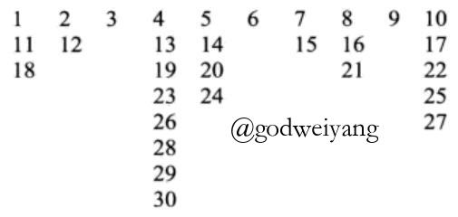
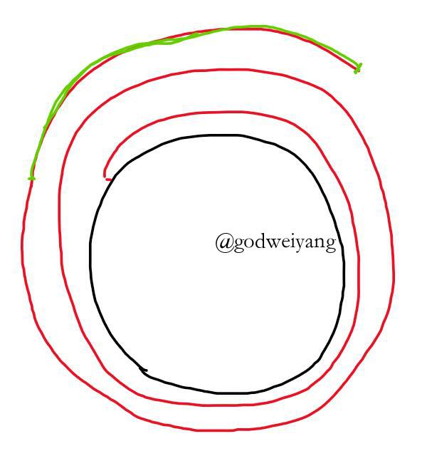

今天主要讲了取整与递归式的结合，还有取模的相关知识。
例题1
给出下列递归式：
\[\begin{array}{l}{K_0}{\rm{ = }}1\\{K_{n + 1}} = 1 + \min (2{K_{\left\lfloor {n/2} \right\rfloor }},3{K_{\left\lfloor {n/3} \right\rfloor }}),n \ge 0\end{array}\]
现在不要求你求解，要你证明：
\[{K_n} \ge n\]
首先想到的就是数学归纳法，假设对于任意$k \le n$，都有${K_k} \ge k$，那么：
\[\begin{array}{l}{K_{n + 1}} = 1 + \min (2{K_{\left\lfloor {n/2} \right\rfloor }},3{K_{\left\lfloor {n/3} \right\rfloor }})\\ \ge 1 + \min (2\left\lfloor {\frac{n}{2}} \right\rfloor ,3\left\lfloor {\frac{n}{3}} \right\rfloor )\end{array}\]
如果$n = 2k$，那么${K_{n + 1}} \ge 1 + n$。
如果$n = 2k + 1$，那么${K_{n + 1}} \ge n$，这时不成立。
所以数学归纳法无法证明，今后我们会用其他方法来证明这个式子。
约瑟夫环新解
还记得约瑟夫环问题吗？详见第一节课。
这里我们继续推广到一般情况，如果有$n$个人，每隔$q$个人踢掉一个人，最后剩下的是几号？
初始编号为$1 \ldots n$，现在考虑一种新的编号方式。
第一个人不会被踢掉，编号加$1$，变成$n + 1$，然后第二个人编号变为$n + 2$，直到第$q$个人，他被踢掉了。
然后第$q + 1$个人编号继续加$1$，变成了$n + q$，依次下去。
考虑当前踢到的人编号为$kq$，那么此时已经踢掉了$k$个人，所以接下去的人新的编号为$n + k(q - 1) + 1 \ldots$。
所以编号为$kq+d$的人编号变成了$n + k(q - 1) + d$，其中$1 \le d < q$。
直到最后，可以发现活下来的人编号为$qn$，问题是怎么根据这个编号推出他原来的编号？
以$n = 10$，$q = 3$为例，下图就是每个人新的编号：

令
\[N = n + k(q - 1) + d\]
所以他上一次的编号是
\[kq + d = kq + N - n - k(q - 1) = k + N - n\]
因为
\[k = \frac{ {N - n - d}}{ {q - 1}} = \left\lfloor {\frac{ {N - n - 1}}{ {q - 1}}} \right\rfloor \]
所以上一次编号可以写为
\[\left\lfloor {\frac{ {N - n - 1}}{ {q - 1}}} \right\rfloor + N - n\]
因此最后存活的人编号可以用如下的算法计算：
N = qn
while N > n:
N = k + N - n
ans = N其中$k = \left\lfloor {\frac{ {N - n - 1}}{ {q - 1}}} \right\rfloor $
如果我们用$D = qn + 1 - N$替代$N$，将会进一步简化算法：
\[\begin{array}{l}D = qn + 1 - N\\ = qn + 1 - \left( {\left\lfloor {\frac{ {(qn + 1 - D) - n - 1}}{ {q - 1}}} \right\rfloor + qn + 1 - D - n} \right)\\ = n + D - \left\lfloor {\frac{ {(q - 1)n - D}}{ {q - 1}}} \right\rfloor \\ = D - \left\lfloor {\frac{ { - D}}{ {q - 1}}} \right\rfloor \\ = D + \left\lceil {\frac{D}{ {q - 1}}} \right\rceil \\ = \left\lceil {\frac{q}{ {q - 1}}D} \right\rceil \end{array}\]
算法伪代码如下：
D = 1
while D <= (q-1)n:
D = k
ans = qn + 1 - D其中$k = \left\lceil {\frac{q}{ {q - 1}}D} \right\rceil $
模的性质
定义与性质
模定义如下：
\[x\bmod y = x - y\left\lfloor {\frac{x}{y}} \right\rfloor \]
特别的
\[x\bmod 0 = x\]
与此类似，定义一个与模类似的运算：
\[x{\rm{ mumble }}y = y\left\lceil {\frac{x}{y}} \right\rceil - x\]
形象理解如下图所示：

圆的周长是$y$，一共走过的路长（红色+绿色部分）是$x$，所以$x\bmod y$就是绿色部分，$x{\rm{ mumble }}y$就是一圈长度减去绿色部分。
模有一些性质：
\[c(x\bmod y) = (cx)\bmod (cy)\]
应用
考虑如下问题，怎么平均分配$n$个东西给$m$个人？
很容易想到，首先分给每个人$\left\lfloor {\frac{n}{m}} \right\rfloor $个东西，剩下$n\bmod m$件东西分给前$n\bmod m$个人，一人多一件就行。
概括起来就是，前$n\bmod m$个人，每人$\left\lceil {\frac{n}{m}} \right\rceil $件，剩下的人，每人$\left\lfloor {\frac{n}{m}} \right\rfloor $件。
那有没有办法统一表示呢？有的，每个人分到的件数为
\[\left\lceil {\frac{ {n - k + 1}}{m}} \right\rceil ,1 \le k \le m\]
为什么呢？假设
\[n = qm + r,0 \le r < m\]
那么
\[\begin{array}{l}\left\lceil {\frac{ {n - k + 1}}{m}} \right\rceil = \left\lceil {\frac{ {qm + r - k + 1}}{m}} \right\rceil \\ = q + \left\lceil {\frac{ {r - k + 1}}{m}} \right\rceil \end{array}\]
当$1 \le k \le r$时，
\[\left\lceil {\frac{ {n - k + 1}}{m}} \right\rceil = 1\]
当$r < k \le m$时，
\[\left\lceil {\frac{ {n - k + 1}}{m}} \right\rceil = 0\]
得证，因此可以得到如下等式：
\[n = \left\lceil {\frac{n}{m}} \right\rceil + \left\lceil {\frac{ {n - 1}}{m}} \right\rceil + \cdots + \left\lceil {\frac{ {n - m + 1}}{m}} \right\rceil \]
由$n = \left\lfloor {\frac{n}{2}} \right\rfloor + \left\lceil {\frac{n}{2}} \right\rceil $
可以进一步将其转换为下取整形式：
\[n = \left\lfloor {\frac{n}{m}} \right\rfloor + \left\lfloor {\frac{ {n + 1}}{m}} \right\rfloor + \cdots + \left\lfloor {\frac{ {n + m - 1}}{m}} \right\rfloor \]
令$n = \left\lfloor {mx} \right\rfloor $
我们得到了一个令人惊奇的等式：
\[\left\lfloor {mx} \right\rfloor = \left\lfloor x \right\rfloor + \left\lfloor {x + \frac{1}{m}} \right\rfloor + \cdots + \left\lfloor {x + \frac{ {m - 1}}{m}} \right\rfloor \]
HDU3089
最后用今天介绍的约瑟夫环算法来解决一道经典的ACM题！题目链接：杭电3089。
C++代码如下：
#include<bits/stdc++.h>
using namespace std;
typedef long long LL;
LL Ceil(LL x, LL y) {
if (x % y == 0) return x / y;
return x / y + 1;
}
LL J(LL n, LL q) {
LL D = 1, end = (q - 1) * n;
while (D <= end) {
D = Ceil(q * D, q - 1);
}
return q * n + 1 - D;
}
int main() {
LL n, q;
while (~scanf("%lld%lld", &n, &q)) {
printf("%lld\n", J(n, q));
}
return 0;
}比网上各种快速算法还要快哦，理论时间复杂度是$\log n$的。